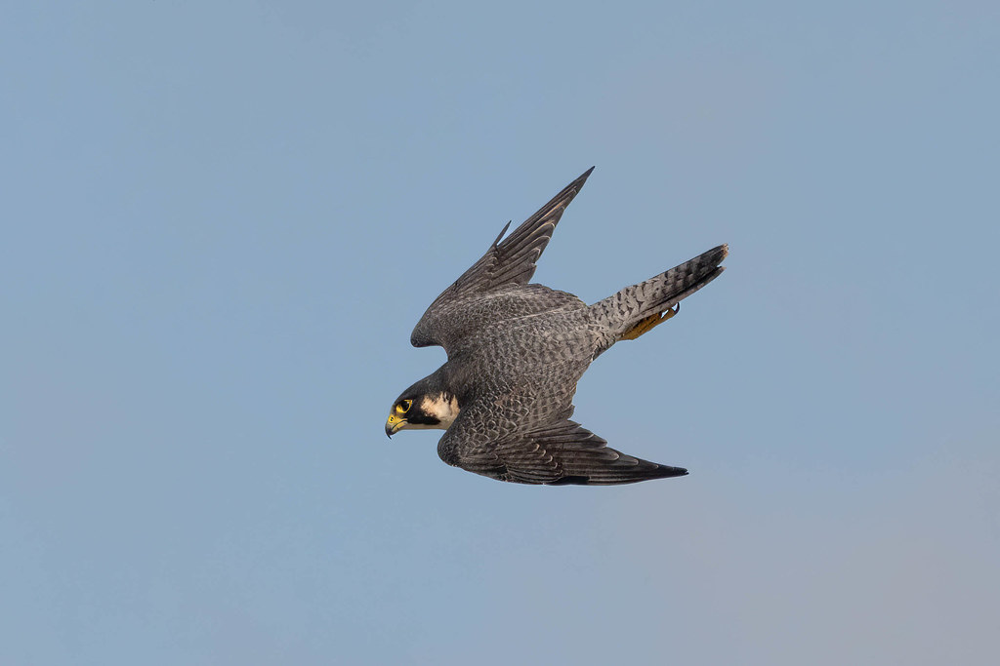
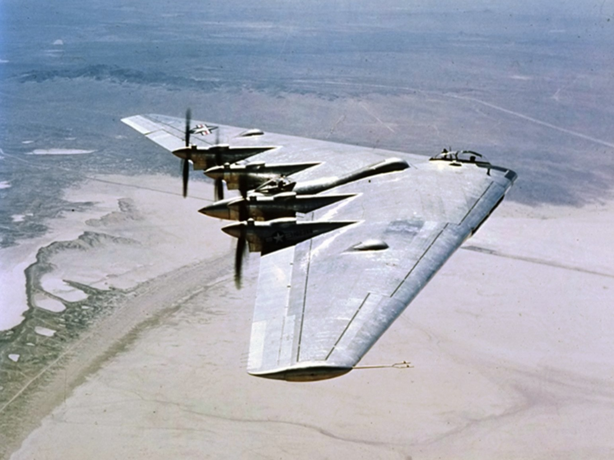
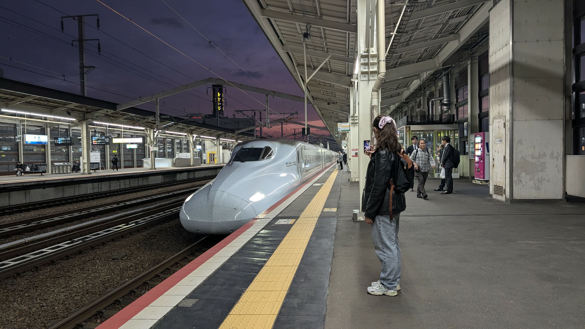

Middle School Chloe had a bird phase. Middle School Chloe also didn't have many friends. Coincidence? Maybe.
But, Middle School Chloe knew things that the popular kids didn’t. Like how birds are amazing at adapting to their environments; after all, they have been designing and testing for tens of millions of years. It’s not really a hypothesis anymore that birds evolved from dinosaurs, it’s a solid scientific fact. My favourite bit of visible proof is the talons on larger raptors (birds of prey). If those don’t look like dinosaur claws, you need a rewatch of Jurassic Park; Dr. Alan Grant will set you straight in the first five minutes. Of course, there’s paleontological evidence, like feather imprints on juvenile Tyrannosaur fossils and the A-lister Archaopteryx, but I’ll take any excuse to rewatch that masterpiece.
Compared to birds, humans are just catching up. Biomimicry is what us engineers call it, and I like the deference it gives to the animals who’ve spent eons getting the designs right. My favourite examples involve the wings and beaks of two incredible birds who have dominated their niches so well that engineers couldn’t help but take notice.
Let’s start with the tiny but mighty peregrine falcon. I love this raptor because of its unique style of hunting: bludgeoning, with its balled-up feet, from the air, at top speeds of over 300 kilometres per hour. If this attack, called a stoop, didn’t immediately kill its prey, no problem! The peregrine falcon will swing back around, snatch its stunned prey and deal with them the old fashioned way.

The Peregrine Falcon in a Stoop
I'm going to get mathy for a moment to truly convey how impressive this is. Assuming the average falcon weighs 1 kg, we can roughly calculate the force of its impact to be:
m = mass = 1 kg
v = velocity (or, speed) = 300 km/h = 83 m/s
d = impact distance = 1 m (this varies, but let’s assume 1 m for simplicity)
Favg = (½)(1)(83²) / 1 ≈ 3,445 N ≈ 775 lbf
Based on the above, this bird whacks its prey with around 775 pounds of force. That’s like someone dropping 100 bricks on your head (or 40 Dachshunds, if dogs are your preferred frame of reference). All from a bird the size of a crow!
So what gives this bird the audacity to be such a lethal killer? The most impactful element of the force equation is velocity. Which, in our case, happens to be the largest number in the equation by far. 300 km/h is insanely fast. Cheetahs run at 113 km/h, and highway speeds in Canada are a smidge faster than that. Peregrine falcons dive at speeds double this, all because of their anatomy.
The falcons essentially tuck their wings and smooth out their feathers to become as aerodynamic as possible. During a stoop, wind is pierced neatly by their narrow, sharp beaks, and the smoothness of their bodies gradually widens and tapers (like a raindrop) to guide the wind around them in a streamlined way. With such little turbulence, the falcons can quickly reach these incredibly high speeds.
They do of course still need to steer, which is why they only fold their wings halfway, creating a triangular-shaped flying speed demon. In the aerospace engineering world, this would be akin to a flying wing aircraft. When someone imagines an airplane, they will probably conjure images of the tube-like body where the people go with two tapered wings on either side. A flying wing airplane looks more triangular in shape, where the distinction between the body and the wings isn’t cleanly defined.

A flying wing aircraft
The wings blend into the nose, and the body looks flattened and stretches to meet the wings, nearly to the tips. When compared to a peregrine falcon’s stoop position, things look similar.
In theory, a flying wing is the most aerodynamically efficient type of aircraft. In the bird world, this translates to incredible speed. But when practical considerations are taken, like steering, the flying wing cannot compete with standard aircraft. An addition of a tail, like the falcon’s, could help, but then the efficiency would be reduced.
Aerodynamic design often feels like a constant give-and-take, this catching-up loop that’s impossible to break into, or break free from. This is where the engineering design cycle can be used to establish the best point to stop. It looks like this: have an idea, test it, fix some of the issues, and go at it again. Repeat until the ideas turn into the perfect design.
That was a trick, of course, since the perfect design is impossible to achieve. So in the case of aircraft design, certain goals must be defined and used as finish lines. Sure, the aircraft could be slightly more aerodynamically efficient. But if it costs a ton of resources (time, money) and takes away from goals already achieved (great steering control, for example), then it might not be worth it. That’s when the design cycle stops.
The peregrine falcon doesn’t know about the engineering design cycle, but evolution has been doing it for them anyway. The most valuable resource to evolution is time, and millions of years has been enough for it to develop record-holding physical abilities in birds like the peregrine falcon.
So while the peregrine falcon was an undocumented inspiration to hyper-efficient aircraft design, there are other birds that have directly impacted the daily lives of people for many years. Let’s talk about the kingfisher.

A kingfisher scanning its pond for lunch
Kingfishers are a very distinguishable bird. You can almost always tell you’re looking at one because of its compact body and its comparatively massive, spike-like beak. As the name suggests, they specialize in hunting fish. As the name also suggests, they’re pretty great at it.
Similar to the peregrine falcon, kingfishers hunt from above. But instead of keeping its dives in the skies, the kingfisher dives into ponds, lakes, rivers, and oceans to nab its dinner. This is impressive, and worth taking note of, for a few reasons.
Water and air are fluids. One’s a liquid and one’s a gas, but both are able to be moved through, unlike a solid. Air is obviously much easier to move through, and that’s because its particles (oxygen, nitrogen, and plenty others) are bouncing around with lots of space between them. Water provides more resistance because its particles (H2O) are happy to be close together and slide against each other. This also explains why gases can be compressed, and when they do, their particles are forced against their will to get closer to one another. It causes an increase in pressure as the particles do their best to regain their personal space.
This concept forms the basis of pneumatics. In real life, this could look like a plunger pushing in a cylinder compressing a gas through a long, thin tube, to push out another plunger in a cylinder on the other side. This is a useful phenomenon for designing things like heavy machinery. But it also creates some problems in other areas of the engineering world.
In Japan lives an incredibly high-speed rail system. These “bullet trains”, or shinkansen, travel up to 320 km/h. It’s just another Tuesday for the peregrine falcon, but that’s 200 km/h faster than standard trains around the world. I rode the shinkansen on my trip to Japan this spring, and I was surprised by the amount of tunnels the train zoomed through. These tunnels actually proved to be a difficult engineering challenge during the design of these train systems.
Imagine, in this scenario, a standard flat-nosed train flying at hundreds of kilometres an hour through a tunnel in the mountains. It would look pretty similar to a plunger in a cylinder, and as we know, when a plunger pushes gas through a cylinder, it compresses it and moves the force out the cylinder at the other end. On a much bigger scale, the train acts like the plunger and the tunnel like the cylinder.
But this isn’t meant to be a pneumatic system. With the train building up so much force in the form of air pressure as it moved so fast through the tunnel, it resulted in a massive booming sound as it exited on the other side. This shockwave was so strong that it disturbed wildlife and humans living nearby, and was capable of damaging infrastructures.
So the Japanese engineers had a problem they couldn’t iterate through in their engineering design cycle. Cue the kingfisher.
When the birds hunt for fish, the only way they don’t harm themselves on entry to the water is by going in beak-first. Kingfishers use their long, pointed beaks to gradually guide the water around their heads and bodies, much like a peregrine falcon does to the air while hunting in a stoop. They are both streamlined. So what did the Japanese engineers do when they realized kingfishers solved this problem millenia ago?
They gave their shinkansen beaks, too.
Now, when the high-speed trains fly through tunnels, they act less as a plunger and more like fluid-piercing spikes. No more booming shockwaves when they exit, because the air isn’t pushed through the tunnel like it had been before. It’s safely guided around the beak-like nose of the train like the water is guided around the body of the kingfisher. And as a bonus, it made the shinkansen both faster and more efficient. Win, win, win.
So, yes, Middle School Chloe was a bird nerd. She’d probably be proud to know Current Chloe is an engineer who still loves them enough to recognize how influential they are to her profession (and to know she has plenty of friends, despite this). Biomimicry is a fascinating science that we still have so much to learn from, because there’s not much that can beat tens of millions of years of ideation, testing, and repeating. Not so bird-brained after all!

I got a wave from the conductor!